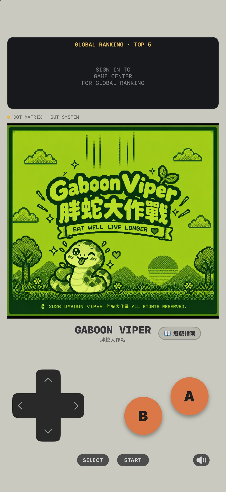
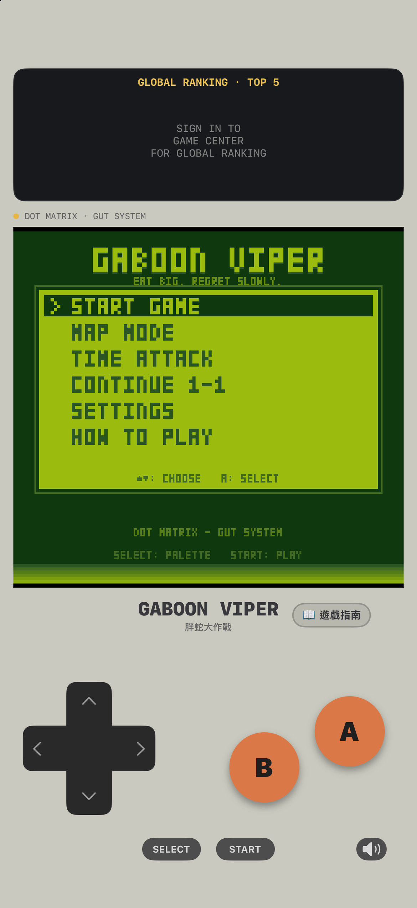
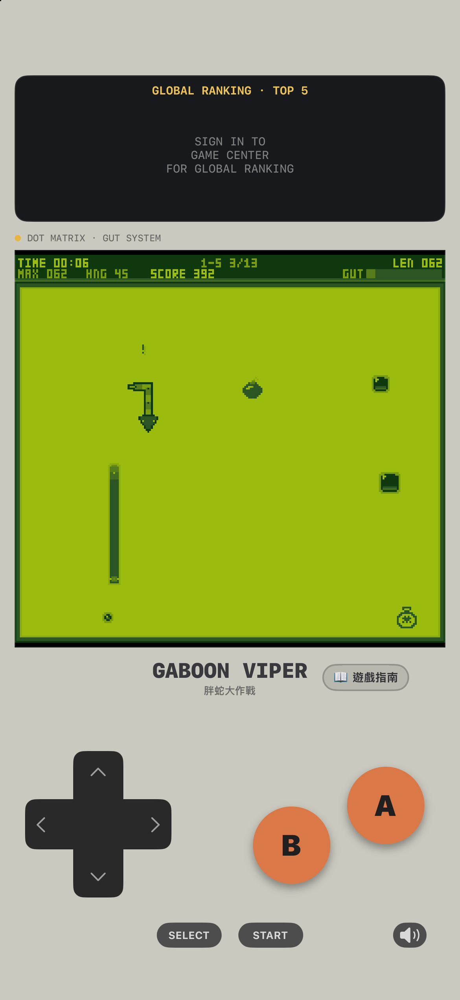
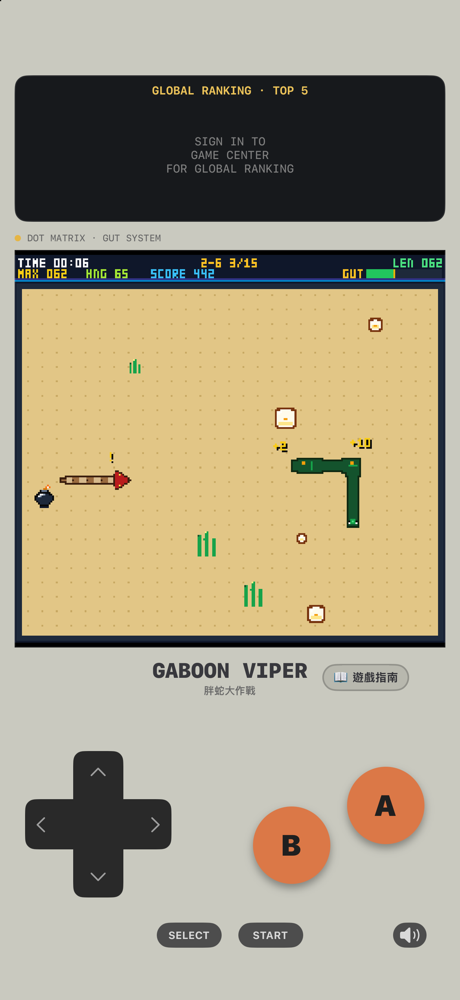

🥚 延遲消化 (Delayed Digestion)
吞下的蛋會化為體內腫塊（Lump），隨身體蠕動逐漸向尾部移動，完全消化吸收後才真正增加體長並釋放胃容量。
胖蛇大作戰（Gaboon Viper，原名 GUTSY）是一款像素掌機風格的成長制動作遊戲。
食物會先在體內慢慢消化；吃太快會撐爆，吃太少又會餓到縮短，還有一條搶食蛇虎視眈眈。
Android · 封閉測試開放申請
Google Play 封閉測試版 2.0.4 已開放給名單內的測試者。使用 Android 手機和 Google Play 帳號即可參加；遊戲免費，歡迎遊玩並回報問題。
這是名單制封測：未收到加入確認前，加入連結可能顯示沒有資格。若願意協助正式版上架，請加入後持續保留測試資格至少 14 天，並將意見寄至 mkjohnny@gmail.com。




核心玩法深度解構
在傳統貪食蛇中，吃到食物就立刻變長。但在胖蛇大作戰中，成長是有重量的、是有代價的延遲代謝過程。
吞下的蛋會化為體內腫塊（Lump），隨身體蠕動逐漸向尾部移動，完全消化吸收後才真正增加體長並釋放胃容量。
胃容量條以綠色（安全）→ 黃色（警示）→ 紅色（臨界）即時呈現。胃一旦超載（超過 100%），蛇身將直接撐爆（BURST）陣亡！
吞下食物後重置 6 秒飢餓計時；若超過 6 秒未進食，每 2 秒體長強制萎縮 1px。當體長不足以維持生命時將枯竭死（TOO EMPTY）。
包含循序挑戰 10 大世界 100 關卡的一般模式、自由選擇任意世界子關卡的地圖模式，以及 5 分鐘無限狂吃的計時賽。
戰術道具圖鑑
場上隨機刷新的 6 大戰術道具，是化解撐爆危機或拚取最高分的關鍵手段。
立即排空體內所有未消化的腫塊，並將身體暫時縮短 3px，瞬間解除撐爆危機！最關鍵的是：縮身不扣減歷史最大長度（MAX），分數倍率完整保留。
提升移動速度 18%，附帶 +50 分獎勵。在考驗微操走位的狹窄磚牆與高速關卡中，能讓蛇蛇迅如閃電穿梭自如。
跟溜冰鞋相反，吃到會放慢移動速度，一個木屐剛好抵銷一雙溜冰鞋，過關後復原，附帶 +50 分。吃撐了想穩穩轉彎時，就靠它踩煞車！
隨機滾動在場上的致命地雷，碰觸即炸！但若在無敵狀態下直接硬踩撞擊，可直接引爆拆彈並額外賺取 +100 分！
稀有戰術寶石（出現率 7.5%），拾取立即獲得 +200 分並展開 8 秒全彩流光無敵護盾，免疫除撞牆外所有死因，可硬踏炸彈與障礙！
拾取立即獲得 +50 分，並在 5 秒內以 3 倍超高速消化體內所有食物，快速將腹中腫塊化為身長，瞬時騰出寶貴胃容量！
遊戲嚴謹判定 7 大死因：BURST（胃超載撐爆）、WALL（撞擊邊界）、BITE（咬到自己）、TOO EMPTY（飢餓枯竭）、BOMB（踩中炸彈）、HAZARD（撞擊仙人掌與磚塊）、RIVAL（碰到搶食蛇）。
遊玩方式
使用螢幕上的十字鍵與 A/B 鍵操作，支援直向與橫向雙手持模式。標準模式循序挑戰，地圖模式可直接選擇世界與子關卡練習，計時模式挑戰 5 分鐘極速。
計分公式
排行榜總分公式：歷史最大長度 (MAX) × 5 ＋ 存活秒數 × 2 ＋ 道具/通關紅利。Game Center 全球排行榜（ID: gutsy_max_len）隨時等你登頂！
收費與隱私
胖蛇大作戰不含廣告、不追蹤使用者、不需要帳號，也沒有應用程式內購買。遊戲進度保存在裝置本機。
Web Prototype
直接在瀏覽器試玩前 3 個世界，已搶先加入搶食蛇，支援 GBA 全彩調色盤、計時模式、8-bit Chiptune 音樂音效與分模式的全球排行榜。原始碼在 GitHub；完整 10 世界與橫向模式請下載 iPhone 版。